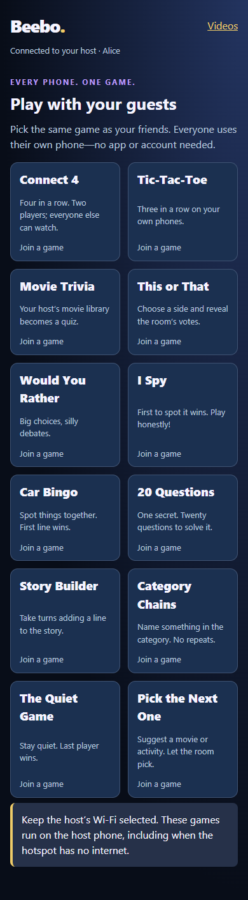
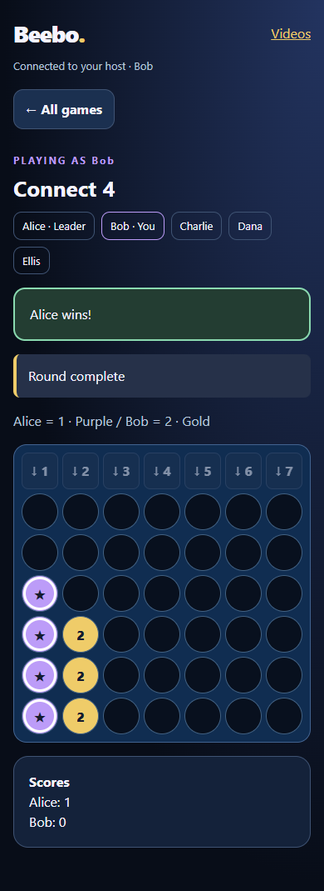

THE LATEST FROM BEEBO
Give your story a voice.
The computer story library is back in reach, with more voices to choose from. Watch Together is easier to find in the video player.
28 English voices for your stories
Install Windows 0.1.27 and reopen it, then update your phone to Android 1.11. The Windows installer now includes the 17 original story templates and fixes the missing-library error. Generated narration is saved in a writable folder on your computer.
- Open Other → Stories and choose a book.
- Add your character names and select Computer voices.
- Choose a narrator and, if you like, different voices for the characters.
- Tap Start story → Prepare computer voices, then Read aloud.
Choose from American and British voices including Heart, Bella, Nicole, Sarah, Michael, Puck, Emma, Isabella, George and Fable. First preparation can take several minutes. Your computer saves the audio so the same names and voices can play again without regenerating it.
First time on this computer? The optional Kokoro voice engine needs a separate, one-time setup and initial model downloads. It does not require a subscription or paid API. After setup, cached English voices can generate audio offline. Your phone still needs a connection to the computer to prepare or play computer narration.
Computer voice setup guide → · Story and voice instructions →
Installed phone voices remain available without the computer. The open-source voice components retain their own licenses and notices.
Find Watch Together
Open Other → Tools → Watch Together for the guide, or start a video and tap the picture to show the controls. The 👥 Watch together button now has a fixed place below the title, so other tools cannot push it off a narrow phone screen.
- Open the same video on each phone.
- Tap Watch together in the player.
- One phone chooses Host; the other phones choose Join as viewer in the same hub household.
- Play, pause and seek from the host’s player. The viewers follow its position.
Online sync requires internet and hub sign-in on each app. Everyone must have access to the same video. When changing films, open the new film on each phone before rejoining.
Campsite guests: local browser videos currently play independently. The guest Games tab shares game turns; this update does not add offline video synchronization.
12 guest games. No guest app needed.
- Update the host phone to Android 1.11 and start Campsite Mode.
- Guests connect to the host’s hotspot or local Wi-Fi, scan the guest QR code and enter a name.
- Open Games in the guest browser and choose the same game as your friends.
- The game leader starts the round. Everyone plays on their own phone.
The host joins through Other → Games → Play with guests. Games run locally on the host phone, including when the hotspot has no internet. Stay connected to that Wi-Fi; no paid relay service or guest account is needed.
Games: Connect 4, Tic-Tac-Toe, Movie Trivia, This or That, Would You Rather, I Spy, Car Bingo, 20 Questions, Story Builder, Category Chains, The Quiet Game and Pick the Next One.
Connect 4 and Tic-Tac-Toe seat two players while others watch. Group games support up to 12 players in a room. The leader can start another round when the current one finishes. A refreshed browser keeps its place; interruptions have a 90-second grace period. Stopping Campsite Mode ends the games.
{kind=link}

{kind=link}

Trivia that clearly shows the answer
The correct answer appears automatically after everyone responds. It is labeled above the choices and on the correct choice, even when nobody selected it. The host can reveal early. Joining late no longer clears the other players’ answers.
Before going offline: open Movies on the host phone while connected to the Beebo computer. This saves a small question pack for later, including after restarting the phone. Trivia uses your own library’s metadata; missing years or genres can limit the questions.
Connect 4 is also available on one phone against Carl or as pass-and-play.
Your 17 premade stories are back in reach
Open Other → Stories for Story Mode / BeeboBook. Choose one of the 17 original books, add your characters’ names, pick a reading voice and follow the choices to different endings.
Story text is stored on the phone. Installed English phone voices can read it offline. Optional computer voices need the existing computer narration setup and a reachable PC while preparing and playing them.
Get the updates
Install Android 1.11 on the host phone; guests use their browsers. Install the signed APK over your existing website app. Windows 0.1.27 repairs the computer story library and narration workers. Reopen the computer app after installing it.
Computer photo browsing is still available at Other → Tools → My Photos & Videos.